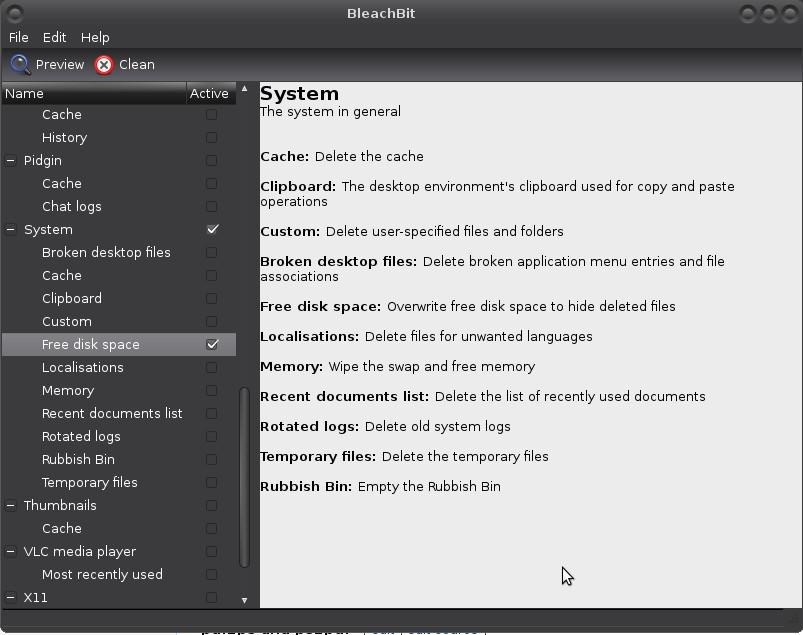

Shredding files and deleting data (Linux)
Even when you erase everything on your hard disk, sometimes it is possible to recover (pieces of) data with forensics software and/or hardware. If that data is confidential, delete files and data securely so that no-one will recover them. Solid State Drives (SSD) may have introduced dramatic changes to the principles of computer forensics, in particular for recovering files and partitions.
When encrypting and compressing files, clear-text versions that existed before you compress/encrypt the file or clear-text copies that are created after you decrypt/decompress it remain on your hard drive. There may also be “temp” files left behind. Unless you purge — not just delete — those clear-text files.
Echoes of your personal data — swap files, temp files, hibernation files, erased files, browser artifacts, etc — are likely to remain on any computer that you use to access (encrypted) data. It is a trivial task to extract those echos. A hidden access trap. Purge – not just delete – echoes.
Shredding files
Linux, FreeBSD and many other *nix systems come with a command line tool called shred installed. The shred command can be useful for destroying files so that its contents are very difficult to recover, even using high-sensitivity data recovery equipment. It repeatedly overwrites the data and the associated file or device names with random data. When used without options, shred will overwrite given files or devices 25 times. A device can be a partition or an entire HDD, USB key drive, etc.
$ shred [option(s)] file(s)_or_devices(s)
For example
$ shred filename1 filename2
will shred both files, and
$ shred /dev/hda4
will shred the fourth partition on the first HDD.
By default, shred does not delete files or partitions after overwriting them. Overwritten files can be deleted by using the -u option.
$ shred -u filename1 filename2
This both frees up the disk space for other data and makes it harder to reconstruct the shredded data.
shred relies on the assumption that the filesystem overwrites data in place. But journal filesystems like //Ext3// and //ReiserFS//, RAID-based filesystems, compressed filesystems, and filesystems that cache data in temporary locations do not satisfy this assumption. Plus that copies of files can be retained in filesystem backups and on remote mirrors. Shredding partitions is therefore more reliable than shredding files.
And even when shredding partitions, most HDDs map out bad sectors invisibly to application programs and utilities, and that includes shred. Sensitive data in such sectors will not be destroyed by shred.
Permanently delete files (including data in RAM or swap)
The Secure-Delete package comes with four commands:
*
srm- Secure remove; used for deleting files or directories currently on your hard disksmem- Secure memory wiper; used to wipe traces of data from your computer’s memory (RAM)sfill- Secure free space wiper; used to wipe all traces of data from the free space on your disksswap- Secure swap wiper; used to wipe all traces of data from your swap partition|
srm (secure remove) is a more advanced version of the shred command. It uses a combination of random data, zeros, and special values developed by cryptographer Peter Gutmann to make files irrecoverable. The shred tool allows you to specify the number of passes and the secure-delete tools use a default of 38 passes. It will also assign a random value for the filename, hiding that key piece of evidence:
$ srm filename
Removing a directory and all its subdirectories (recursive):
$ srm -r directory/
smem (secure memory wipe) removes residual traces of data that remain in memory. It is relatively easy for someone with the right tools to figure out what you had stored in RAM, which may be the contents of important files, internet activity, or whatever else it is you do with your computer. smem is slow. There are options to speed things up, but they increase risk by performing fewer overwrite passes.
Invoke with:
$ smem
sfill (secure free space wipe) wipes all the free space on your disk where past files have existed. This is particularly useful if you are getting rid of a hard disk for good; you can boot a LiveCD, delete everything on the disk, and then use sfill to make sure that nothing is recoverable (as root):
# sfill mountpoint/
NOTE: If you have /home/ on a separate partition and you try /home/hilarious/mistake as mountpoint, sfill will happily wipe the free space on which the mistake directory resides (the entire /home/ partition).
sswap (secure swap wipe) wipes swap partitions. Swap partitions store data of running programs when RAM is filled up.
Find your mounted swap devices by running:
$ cat /proc/swaps
Or look in your /etc/fstab file for filesystems of type swap. It can be /dev/sda5 or /dev/dm-1, etc.
Disable the swap partition:
$ sudo swapoff /dev/sda6
Wipe:
$ sudo sswap /dev/sda6
Re-enable swap:
$ sudo swapon /dev/sda6
Making deleted data hard to recover
A hack that might work for sensitive data in sectors that were not destroyed by shred is towrite zeroes or random data to a file on the drive until it fills up all of the available space, then delete it:
$ dd if=/dev/urandom of=/path/filename1
Then delete:
$ rm /path/filename1
This also works on partitions:
$ dd if=/dev/urandom of=/dev/sda4
Then delete
$ fdisk /dev/sda4
Command (m for help): d
Partition number (1-4): 4
Using bleachbit to delete files
With BleachBit you can free cache, delete cookies, clear Internet history, shred temporary files, delete logs, and discard junk you didn’t know was there.

The version of BleachBit in the repositories of many Linux distributions is often stale, so to use the best and latest version, use download.